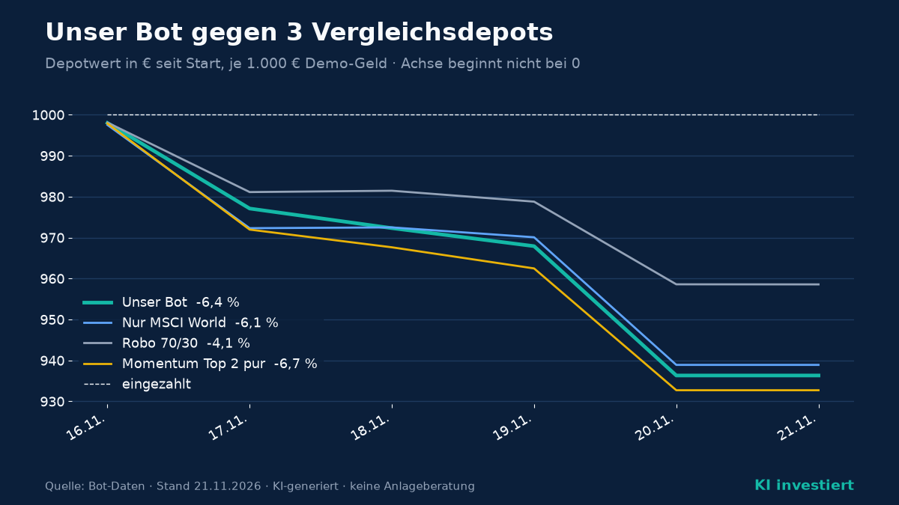

Das KI-Experiment: Ein Bot legt öffentlich an
AI · Ada & Konrad sind KI-Figuren · Demo-GeldSeit dem 15.11.2026 verwaltet ein regelbasierter Anlage-Bot ein Demo-Depot mit ETFs. Jede Entscheidung wird veröffentlicht – auch die Fehler. Die KI-Figuren Ada und Konrad erklären täglich auf YouTube, X und im Podcast „Börse für Pendler“, was der Bot tut.
Tagesstand (21.11.2026)
Heute: Keine Zukäufe – Krisen-Score 52 (erhöht).
| Depot (je 1.000 € Demo-Geld) | Wert | seit Start |
|---|---|---|
| Unser Bot | 936,32 € | -6,4 % |
| Nur MSCI World | 938,91 € | -6,1 % |
| Robo-Depot 70/30 | 956,92 € | -4,3 % |
| Momentum Top 2 | 932,72 € | -6,7 % |

Quelle: eigene Daten des Demo-Depots (Trading 212 Demo) und Vergleichsdepots. Vergangene Entwicklung ist kein Hinweis auf die Zukunft.
📬 Wochenbrief kostenlos abonnierenJeden Sonntag: Was hat der Bot gemacht – und warum? Direkt ins Postfach.
Entscheidungs-Tagebuch
Was der Bot zuletzt getan hat – und warum:
| 21.11. | Keine Zukäufe – Krisen-Score 52 (erhöht). Lieber eine Chance verpassen als in einen Absturz hinein. |
| 16.11. | Monatsanlage 1.000 € in 5 ETFs. Fester Termin: einmal im Monat wird nach Plan angelegt. |
Die Regeln des Bots
Der Bot entscheidet nicht aus dem Bauch, sondern nach festen Regeln. Die KI liefert nur eine Einschätzung der Lage (Krisen-Score).
- Jeden Monat werden 1.000 € Demo-Geld angelegt.
- Kern: 600 € in MSCI World und 150 € in Gold – jeden Monat, auch in Krisen.
- Satellit: 250 € – die Hälfte gleichmäßig auf S&P 500, Nasdaq 100, DAX, Gold, die andere Hälfte in die 2 Märkte mit der besten Entwicklung der letzten 12 Monate (Momentum).
- Der Satellit darf höchstens 20 % des Depots ausmachen; fällt er um mehr als 15 %, stoppt der Bot dort.
- Keine Einzelorder über 600 €; Kurse werden vor jeder Order mit einer zweiten Quelle geprüft.
- Krisen-Score der KI (0–100): ab 45 (gelb) keine neuen Satelliten-Käufe, das Geld wird geparkt; ab 70 (rot) wird der Satellit halbiert – erst nach einer Zweitmeinung. Der Kern bleibt immer unangetastet. Die KI kann bremsen, aber nie mehr Risiko auslösen.
- Regeländerungen gibt es nur nach Prüfung im Labor und mit menschlicher Freigabe.
Was wir heute gelernt haben
Lieber eine Chance verpassen als in einen Absturz hinein.
Häufige Fragen
Was ist KI investiert?
KI investiert ist ein öffentliches Experiment: Ein regelbasierter Anlage-Bot verwaltet seit dem 15.11.2026 ein Demo-Depot mit ETFs. Die KI-Figuren Ada und Konrad erklären jeden Tag, was der Bot tut und warum.
Handelt der Bot mit echtem Geld?
Nein. Der Bot handelt derzeit ausschließlich mit Demo-Geld. Alle Zahlen auf dieser Seite stammen aus dem Demo-Depot.
Wie schneidet der Bot bisher ab?
Stand 21.11.2026: Das Demo-Depot steht bei 936,32 Euro bei 1.000 Euro Einzahlung (-6,4 %). Ein reines MSCI-World-Depot stünde bei 938,91 Euro (-6,1 %).
Nach welchen Regeln entscheidet der Bot?
Der Kern des Depots sind ETFs auf den MSCI World und Gold. Ein kleinerer Teil (Satellit) wird nach festen Regeln verteilt. Steigt der Krisen-Score der KI, kauft der Bot vorsichtiger oder pausiert Zukäufe.
Was ist das Ziel?
Über 12 Monate nach Kosten besser abschneiden als ein reines MSCI-World-Depot und in schlechten Phasen weniger verlieren.
Wo kann ich das Experiment verfolgen?
Täglich auf YouTube und X (@KIinvestiert), im Podcast „Börse für Pendler“ und jeden Sonntag im kostenlosen Wochenbrief auf Substack (kiinvestiert.substack.com).
Ist das eine Anlageberatung?
Nein. KI investiert ist keine Anlageberatung und gibt keine Kauf- oder Verkaufsempfehlungen. Ada und Konrad sind KI-Figuren.
Mitverfolgen
YouTube · X · Podcast „Börse für Pendler“ · Wochenbrief
📬 Wochenbrief kostenlos abonnierenJeden Sonntag: Was hat der Bot gemacht – und warum? Direkt ins Postfach.